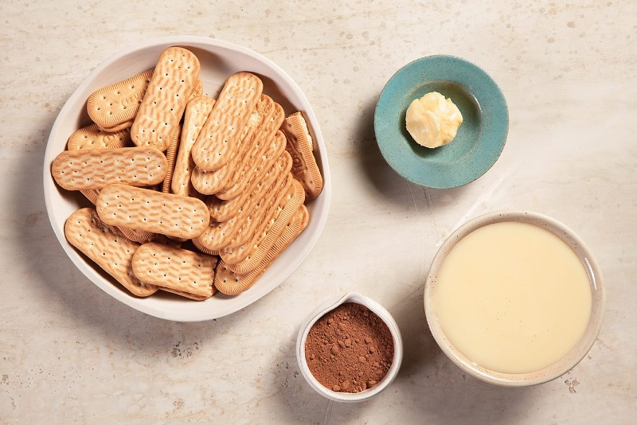
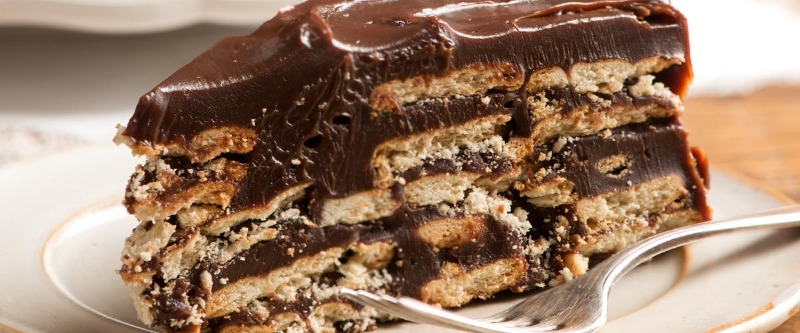

Palha Italiana INGREDIENTES  1 lata de leite condensado 8 colheres (sopa) de chocolate em pó 1/2 colher (sopa) de margarina 1 pacote de biscoito maisena MODO DE PREPARO Pique o biscoito em pedacinhos pequenos e reserve. Com o leite condensado, a margarina e o chocolate em pó, faça um brigadeiro. Assim que o brigadeiro começar a soltar do fundo da panela, misture o biscoito picado até formar uma massa, retire do fogo. Unte uma bancada de mármore, ou alguma superfície lisa, com margarina e despeje essa massa. Abra a massa, batendo com a palma das mãos. Deixe esfriar e corte em quadradinhos. 